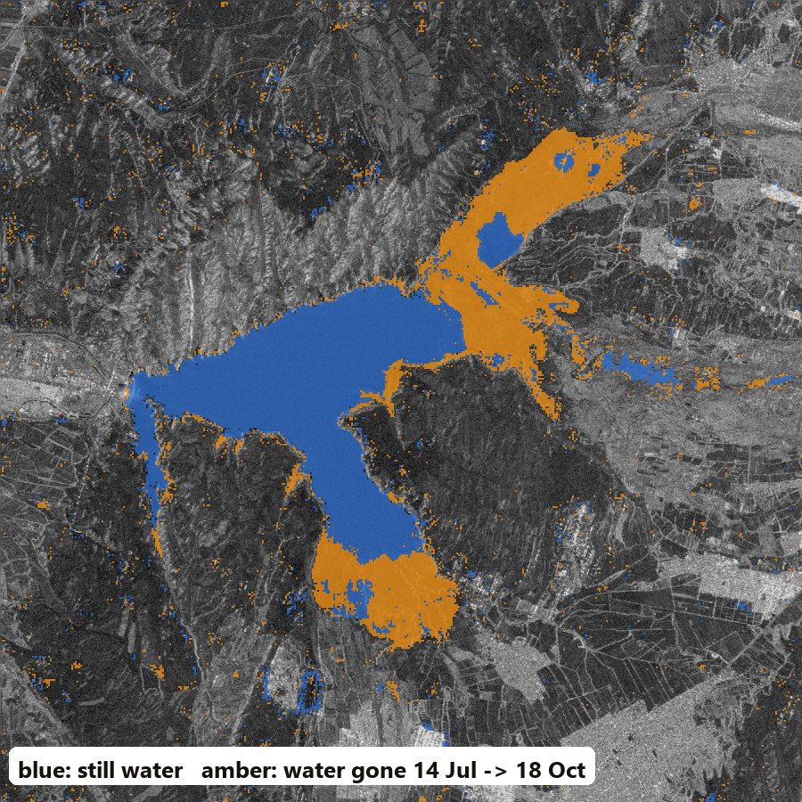
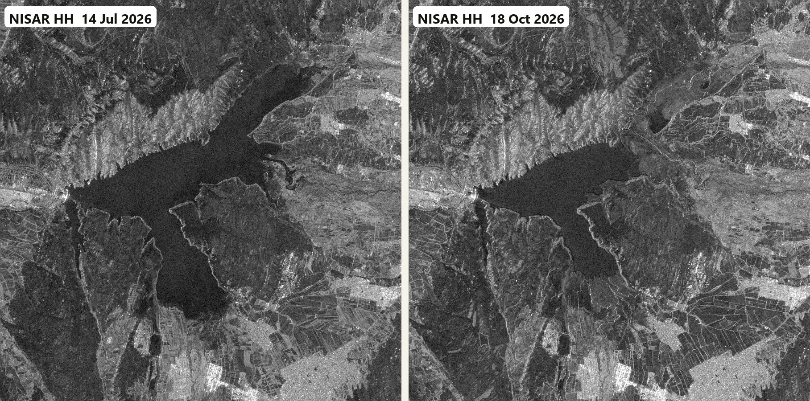

<!doctype html>
<meta charset="utf-8">
<meta name="viewport" content="width=device-width,initial-scale=1">

<link rel="preconnect" href="https://fonts.googleapis.com">
<link rel="stylesheet" href="https://fonts.googleapis.com/css2?family=Inter+Tight:wght@400;500;600;800&display=swap">
<style>
.shot{border-radius:18px;overflow:hidden;box-shadow:0 14px 34px -18px rgba(15,22,48,.45);border:1px solid rgba(255,255,255,.9);background:#fff}
.shot img{display:block;width:100%;height:100%;object-fit:cover}
.cap{font:400 11px/1.4 var(--mono);color:var(--ink-3);margin-top:8px}
.tile{padding:14px;border-radius:20px;display:grid;grid-template-rows:140px auto auto auto;gap:7px}
.tile .shot{height:140px}
.tile b{font:400 21px/1 var(--mono);color:var(--mint)}
.tile h4{margin:0;font-size:15px;font-weight:800}
.tile p{font-size:12.5px;line-height:1.4;color:var(--ink-2)}
.t30{list-style:none;margin:0;padding:0;display:grid;gap:5px}
.t30 li{display:grid;grid-template-columns:26px 1fr auto;gap:6px;font-size:13px;line-height:1.3;align-items:baseline}
.t30 li i{font:400 11px/1 var(--mono);color:var(--ink-3);font-style:normal}
.t30 li s{text-decoration:none;font:400 10px/1 var(--mono);padding:3px 6px;border-radius:99px;background:rgba(15,22,48,.06);color:var(--ink-2)}
.t30 li s.on{background:var(--mint-s);color:var(--mint)}
</style>
<style>
/* Layout: same 1200x675 slide stage as the app deck. Eye Run look: pale page, soft mint + blue light, white glass, mint mono numbers */
@font-face{font-family:"Departure Mono";src:url("fonts/DepartureMono.woff2") format("woff2");font-display:swap}
:root{
  --page:#F2F4F8; --ink:#0F1630; --ink-2:#4B5470; --ink-3:#8A92AA; --line:#E6E9F1;
  --mint:#1C7E69; --mint-s:rgba(28,126,105,.10);
  --amber:#B45309; --amber-s:rgba(180,83,9,.10);
  --blue:#2563EB; --blue-s:rgba(37,99,235,.09);
  --violet:#7C3AED; --violet-s:rgba(124,58,237,.09);
  --sans:"Inter Tight",system-ui,-apple-system,"Segoe UI",sans-serif;
  --mono:"Departure Mono",ui-monospace,"Cascadia Mono",Consolas,monospace;
  --r:28px; color-scheme:light;
}
*{box-sizing:border-box}
html,body{height:100%}
body{margin:0;overflow:hidden;color:var(--ink);font:400 17px/1.5 var(--sans);-webkit-font-smoothing:antialiased;
  background:radial-gradient(1100px 620px at 12% -8%,#D9F0E6 0%,transparent 62%),radial-gradient(900px 560px at 92% 2%,#DDE6FB 0%,transparent 58%),radial-gradient(800px 500px at 60% 115%,#E1F2EC 0%,transparent 60%),var(--page)}
.stage{position:fixed;left:50%;top:50%;width:1200px;height:675px;transform-origin:center}
.glass{position:relative;border-radius:var(--r);background:rgba(255,255,255,.72);border:1px solid rgba(255,255,255,.9);
  box-shadow:0 1px 1px rgba(15,22,48,.04),0 10px 28px -14px rgba(15,22,48,.22),inset 0 1px 0 rgba(255,255,255,.95);
  -webkit-backdrop-filter:blur(22px) saturate(1.35);backdrop-filter:blur(22px) saturate(1.35);overflow:hidden}
.glass::before{content:"";position:absolute;inset:0;border-radius:inherit;pointer-events:none;background:linear-gradient(145deg,rgba(255,255,255,.55) 0%,rgba(255,255,255,0) 42%)}
.glass>*{position:relative}
.mint-card{background:linear-gradient(150deg,#1C7E69 0%,#23A06C 100%);border-color:rgba(255,255,255,.35);color:#fff;box-shadow:0 18px 36px -16px rgba(28,126,105,.55),inset 0 1px 0 rgba(255,255,255,.35)}
.mint-card::before{background:linear-gradient(145deg,rgba(255,255,255,.22) 0%,rgba(255,255,255,0) 45%)}
.slide{position:absolute;inset:0;padding:40px 52px 96px;opacity:0;visibility:hidden;transform:translateX(18px);transition:opacity .4s ease,transform .45s cubic-bezier(.23,1,.32,1),visibility 0s .4s}
.slide.on{opacity:1;visibility:visible;transform:none;transition:opacity .4s ease,transform .45s cubic-bezier(.23,1,.32,1)}
.slide.back{transform:translateX(-18px)}
@media (prefers-reduced-motion:reduce){.slide,.slide.on{transition:opacity .15s;transform:none}}
.eyebrow{font:400 12px/1.4 var(--mono);letter-spacing:.14em;text-transform:uppercase;color:var(--ink-2);margin:0}
h1,h2,h3{font-family:var(--sans);margin:0;text-wrap:balance}
h1{font-weight:800;font-size:48px;line-height:1.05;letter-spacing:-.03em}
h2{font-weight:800;font-size:38px;line-height:1.08;letter-spacing:-.025em}
h3{font-weight:800;font-size:21px;line-height:1.25;letter-spacing:-.012em}
p{margin:0}
.muted{color:var(--ink-2)}
.big{font:400 84px/.9 var(--mono);letter-spacing:-.045em;color:var(--mint)}
.kpi{border-radius:18px;background:rgba(255,255,255,.66);border:1px solid rgba(255,255,255,.9);box-shadow:0 8px 22px -16px rgba(15,22,48,.3),inset 0 1px 0 rgba(255,255,255,.95);-webkit-backdrop-filter:blur(16px);backdrop-filter:blur(16px);padding:16px 18px}
.kpi b{display:block;font:400 30px/1 var(--mono);letter-spacing:-.03em}
.kpi span{display:block;font:400 11.5px/1.4 var(--mono);color:var(--ink-2);margin-top:8px}
.kpi.warn b{color:var(--amber)}
.chip{display:inline-flex;align-items:center;gap:7px;font:400 11px/1 var(--mono);letter-spacing:.08em;text-transform:uppercase;padding:7px 11px;border-radius:999px;background:var(--s-soft,var(--mint-s));color:var(--s,var(--mint));white-space:nowrap}
.chip::before{content:"";width:6px;height:6px;border-radius:50%;background:var(--s,var(--mint))}
.c-amber{--s:var(--amber);--s-soft:var(--amber-s)}.c-blue{--s:var(--blue);--s-soft:var(--blue-s)}.c-violet{--s:var(--violet);--s-soft:var(--violet-s)}
.lab{font:400 11px/1.4 var(--mono);letter-spacing:.14em;text-transform:uppercase;color:var(--ink-3);margin:0 0 8px}
.ul{list-style:none;margin:0;padding:0;display:grid;gap:8px}
.ul li{position:relative;padding-left:22px;font-size:15.5px;line-height:1.45}
.ul li::before{content:"";position:absolute;left:3px;top:.55em;width:8px;height:8px;border-radius:50%;background:var(--mint)}
.ul.amber li::before{background:var(--amber)}
.raw{font:400 12.5px/1.55 var(--mono);background:rgba(15,22,48,.045);border-radius:14px;padding:14px 16px;color:var(--ink);white-space:pre;overflow:hidden}
.raw .hl{color:var(--amber)}
.find{display:grid;grid-template-columns:1fr 1fr;gap:14px;position:absolute;left:52px;right:52px;top:186px;height:400px}
.find>.glass{padding:24px 26px;display:grid;align-content:start;gap:12px}
.dock{position:absolute;left:50%;bottom:18px;transform:translateX(-50%);display:flex;align-items:center;gap:12px;padding:7px 9px;border-radius:999px;z-index:5}
.dock button{all:unset;cursor:pointer;width:38px;height:38px;border-radius:50%;display:grid;place-items:center;color:var(--ink);transition:background .2s}
.dock button:hover{background:rgba(15,22,48,.05)}
.dots{display:flex;gap:6px;align-items:center}
.dots button{all:unset;cursor:pointer;width:7px;height:7px;border-radius:99px;background:rgba(15,22,48,.16);transition:width .3s cubic-bezier(.23,1,.32,1),background .3s}
.dots button.on{width:22px;background:var(--mint)}
.count{font:400 12px/1 var(--mono);color:var(--ink-2);min-width:50px;text-align:center}
button:focus-visible{outline:2px solid var(--mint);outline-offset:2px}
.bar{height:16px;border-radius:7px;background:rgba(15,22,48,.06);position:relative;overflow:hidden;box-shadow:inset 0 1px 2px rgba(15,22,48,.07)}
.bar i{position:absolute;left:0;top:0;bottom:0;border-radius:7px;box-shadow:inset 0 1px 0 rgba(255,255,255,.45)}
.bar i.now{background:var(--amber)}
.bar i.goal{background:rgba(28,126,105,.22);border:1.5px dashed rgba(28,126,105,.6);box-shadow:none}
.idea{padding:12px 14px;border-radius:18px;display:grid;grid-template-columns:30px 1fr;gap:8px;align-items:start}
.idea b{font:400 13px/1.3 var(--mono);color:var(--mint)}
.idea h4{margin:0;font-weight:600;font-size:14.5px;line-height:1.3}
.idea p{font-size:12.5px;line-height:1.4;color:var(--ink-2);margin-top:3px}
.node{position:absolute;padding:12px 14px;border-radius:18px;text-align:center}
.node h4{margin:0;font-weight:800;font-size:15px}
.node p{font:400 10.5px/1.4 var(--mono);color:var(--ink-2);margin-top:4px}
table{border-collapse:collapse;width:100%}
th,td{text-align:left;padding:6px 9px;border-bottom:1px solid var(--line);font-size:12.5px;line-height:1.35;vertical-align:top}
th{font:400 10.5px/1.4 var(--mono);letter-spacing:.1em;text-transform:uppercase;color:var(--ink-2)}
td b{font-weight:600}
</style>

<main class="stage" id="stage" aria-roledescription="slide deck"></main>
<script>
const S=[];
const F=(n,t)=>`<p class="eyebrow">${n}</p><h2 style="margin-top:12px">${t}</h2>`;
S.push(`
 <div style="position:absolute;left:56px;top:60px;width:560px;display:grid;gap:22px">
  <p class="eyebrow">NASA Space Apps Challenge 2026 · Dancing with the SARs</p>
  <h1 style="font-size:64px;line-height:1">Falakus</h1>
  <p style="font-size:24px;line-height:1.3">Water intelligence for Uzbekistan from NASA-ISRO NISAR radar: what changed, why, and what comes next, through cloud and at night.</p>
  <div class="glass" style="padding:18px 22px;display:grid;gap:6px"><p class="lab">Team Falakus · Tashkent, Uzbekistan</p><p style="font-size:16px">Member 1 · Member 2 · Member 3 · Member 4 · Member 5 · Member 6</p></div>
 </div>
 <div style="position:absolute;left:650px;right:52px;top:56px;height:500px"><div class="shot" style="height:470px"></div>
 <p class="cap">Andijan reservoir, NISAR radar: amber = water released between 14 Jul and 18 Oct 2026.</p></div>`);
S.push(`${F("Problem","Without radar, the valley's water budget is planned half-blind")}
 <div style="position:absolute;left:52px;right:52px;top:150px;display:grid;grid-template-columns:repeat(3,1fr);gap:14px">
  <div class="glass" style="padding:24px;display:grid;gap:8px;align-content:start"><b style="font:400 40px/1 var(--mono);color:var(--mint)">10.9 M</b><h3>people, one river system</h3><p class="muted" style="font-size:15px">The Fergana valley's three regions (29 % of Uzbekistan) live on reservoirs like Andijan on the Kara Darya, head of the Syr Darya.</p></div>
  <div class="glass" style="padding:24px;display:grid;gap:8px;align-content:start"><b style="font:400 40px/1 var(--mono);color:#C2410C">15 of 24</b><h3>winter photos lost to cloud</h3><p class="muted" style="font-size:15px">Sentinel-2, Dec–Mar 2025: the months when spring releases are planned. Camera satellites go blind exactly when the decision is made.</p></div>
  <div class="glass" style="padding:24px;display:grid;gap:8px;align-content:start"><b style="font:400 40px/1 var(--mono);color:var(--mint)">Undetected</b><h3>what changes in the dark</h3><p class="muted" style="font-size:15px">How fast a reservoir is drawn down, when upstream canals start taking more water, when fields are harvested. Missed for weeks, or seen too late.</p></div>
 </div>`);
S.push(`${F("Solution","Falakus turns every 12-day NISAR pass into a checked water map and a plain-language briefing")}
 <div style="position:absolute;left:52px;top:170px;width:560px;display:grid;gap:14px">
  <p style="font-size:20px;line-height:1.4">A model trained on photos learns what open water looks like to the radar. Then it maps the water on every pass, cloud or not. It writes what happened, why, and what comes next, for a farmer, a water manager and a family.</p>
  <div class="glass mint-card" style="padding:18px 22px"><p style="font-size:15px"><b>Example briefing, Andijan reservoir:</b> "Clear-day photos show the lake fell from 42.1 to 21.1 km² (23 Jun to 19 Oct) as water went to the fields. Refill to about 29 km² expected by February."</p></div>
 </div>
 <div style="position:absolute;left:650px;right:52px;top:150px;height:430px"><div class="shot" style="height:400px"></div><p class="cap">Hero change map: blue = still water, amber = water gone 14 Jul → 18 Oct 2026.</p></div>`);
S.push(`${F("How it works","From NASA's radar files to a water map and a briefing")}
 <div style="position:absolute;left:52px;right:52px;top:170px;display:grid;grid-template-columns:1fr 26px 1fr 26px 1fr 26px 1fr;gap:6px;align-items:center">
  <div class="glass" style="padding:18px;display:grid;gap:6px;align-content:start"><p class="lab">1 · Data</p><h3>NISAR GCOV, ASF DAAC</h3><p class="muted" style="font-size:13.5px">Calibrated HH and HV radar, 20 m, every 12 days. We read only our box from each HDF5 file over HTTPS.</p></div><b style="font-size:26px;color:var(--mint);text-align:center">→</b>
  <div class="glass" style="padding:18px;display:grid;gap:6px;align-content:start"><p class="lab">2 · Preprocessing</p><h3>Clean the signal</h3><p class="muted" style="font-size:13.5px">Lee speckle filter, decibels, texture, each pixel's season history; slopes over 12° masked with the Copernicus elevation model (radar shadow).</p></div><b style="font-size:26px;color:var(--mint);text-align:center">→</b>
  <div class="glass" style="padding:18px;display:grid;gap:6px;align-content:start"><p class="lab">3 · Model</p><h3>Gradient boosting</h3><p class="muted" style="font-size:13.5px">10 radar features per pixel, labelled by Sentinel-2 photo water on clear days; tested on days it never saw, with a shuffled-label control.</p></div><b style="font-size:26px;color:var(--mint);text-align:center">→</b>
  <div class="glass" style="padding:18px;display:grid;gap:6px;align-content:start"><p class="lab">4 · Output</p><h3>Change map + briefing</h3><p class="muted" style="font-size:13.5px">Water km² per pass, change map, forecast for the next months, and a plain-language briefing per water body.</p></div>
 </div>
 <p class="muted" style="position:absolute;left:52px;right:52px;top:470px;font-size:14px">Outside checks run beside the model: Sentinel-2 photos, NASA ICESat-2 laser water levels, Sentinel-1 C-band radar. Open source (MIT): every number comes from a script in tools/.</p>`);
S.push(`${F("Results","NISAR sees the release, and two independent checks agree")}
 <div style="position:absolute;left:52px;top:150px;width:700px;height:400px"><div class="shot" style="height:370px"></div><p class="cap">Before / after, NISAR HH: calm water is a mirror and goes black.</p></div>
 <div style="position:absolute;left:780px;right:52px;top:150px;display:grid;gap:14px">
  <div class="kpi"><b>IoU 0.63</b><span>learned water map vs clear-day photos on 8 days it never saw. One-number rule: 0.59 with a water map, 0.30 without. Shuffled labels: 0.07.</span></div>
  <div class="kpi"><b>ρ = 0.95</b><span>NASA ICESat-2 laser water level vs lake area, 9 passes: a second satellite, a different physics, the same rise and fall.</span></div>
 </div>`);
S.push(`${F("NASA & partner data","Exactly what we used, and for what")}
 <div class="glass" style="position:absolute;left:52px;right:52px;top:140px;padding:14px 22px"><table><thead><tr><th>dataset</th><th>how we used it</th></tr></thead><tbody><tr><td><b>NISAR L2 GCOV (NASA-ISRO, ASF DAAC)</b></td><td>Core: calibrated HH/HV radar every 12 days; water, crops, change</td></tr><tr><td><b>NISAR L2 GUNW</b></td><td>Ground motion from radar phase (method shown on a quake)</td></tr><tr><td><b>ICESat-2 ATL13 (NASA)</b></td><td>Laser water levels: independent check of the water area</td></tr><tr><td><b>NASA EONET + GIBS</b></td><td>Floods, fires, storms, rain (IMERG) for context worldwide</td></tr><tr><td><b>Sentinel-2 L2A (ESA)</b></td><td>Photo water labels on clear days; 10-year monthly record</td></tr><tr><td><b>Sentinel-1 RTC (ESA)</b></td><td>C-band radar: compare frequencies (L vs C)</td></tr><tr><td><b>Copernicus DEM, ESA WorldCover</b></td><td>Terrain mask (radar shadow); cropland and water zones</td></tr><tr><td><b>Landsat 5–9 (USGS), RADARSAT-1 (CSA)</b></td><td>1985–2025 time-lapse; 1997 radar of the Aral</td></tr><tr><td><b>Statistics Agency of Uzbekistan</b></td><td>Population that depends on the water (1 Oct 2025)</td></tr></tbody></table></div>`);
S.push(`${F("Impact & next steps","Who uses it, and what we would scale")}
 <div style="position:absolute;left:52px;right:52px;top:150px;display:grid;grid-template-columns:1fr 1fr;gap:14px">
  <div class="glass" style="padding:24px;display:grid;gap:10px;align-content:start"><p class="lab">Who uses it</p>
   <p style="font-size:16px"><b>Basin water agencies:</b> reservoir area every 12 days through cloud, for winter and spring release plans.</p>
   <p style="font-size:16px"><b>Farmers:</b> a plain briefing: how full the lake is, and what spring water to expect.</p>
   <p style="font-size:16px"><b>Families and teachers:</b> 10.9 million people in the valley can see where their water goes.</p></div>
  <div class="glass mint-card" style="padding:24px;display:grid;gap:10px;align-content:start"><p class="lab">Next steps</p>
   <p style="font-size:16px">1 · Every big reservoir and canal on the Amu Darya and Syr Darya, including the Qosh Tepa canal upstream.</p>
   <p style="font-size:16px">2 · Volume, not just area: area × ICESat-2 levels.</p>
   <p style="font-size:16px">3 · ALOS-2008 to NISAR-2026: 18 years of L-band radar.</p>
   <p style="font-size:16px">4 · NISAR soil moisture and ground motion for farms and canals.</p></div>
 </div>
 <p class="muted" style="position:absolute;left:52px;bottom:40px;font-size:13px">Open source, MIT · github.com/tolipovmurodjon/falakus · AI use: Claude helped write code and text; the team checked every number. No AI-generated images.</p>`);
const stage=document.getElementById("stage");
stage.innerHTML=S.map((s,i)=>`<section class="slide" id="s${i+1}" aria-label="Slide ${i+1} of ${S.length}">${s}</section>`).join("")+
 `<nav class="dock glass" aria-label="Slides"><button id="prev" aria-label="Previous slide"><svg width="18" height="18" viewBox="0 0 24 24" fill="none" stroke="currentColor" stroke-width="2" stroke-linecap="round" stroke-linejoin="round"><path d="M15 18l-6-6 6-6"/></svg></button>
  <div class="dots">${S.map((_,i)=>`<button aria-label="Slide ${i+1}"></button>`).join("")}</div><span class="count" id="count"></span>
  <button id="next" aria-label="Next slide"><svg width="18" height="18" viewBox="0 0 24 24" fill="none" stroke="currentColor" stroke-width="2" stroke-linecap="round" stroke-linejoin="round"><path d="M9 18l6-6-6-6"/></svg></button></nav>`;
let cur=-1;const SL=[...document.querySelectorAll(".slide")],DT=[...document.querySelectorAll(".dots button")];
function go(i,quiet){i=Math.max(0,Math.min(SL.length-1,i));if(i===cur)return;
 SL.forEach((s,k)=>{s.classList.toggle("on",k===i);s.classList.toggle("back",k<i)});DT.forEach((d,k)=>d.classList.toggle("on",k===i));
 document.getElementById("count").textContent=`${i+1} / ${SL.length}`;cur=i;if(!quiet)try{history.replaceState(null,"","#s"+(i+1))}catch(e){}}
document.getElementById("prev").onclick=()=>go(cur-1);document.getElementById("next").onclick=()=>go(cur+1);
DT.forEach((d,k)=>d.onclick=()=>go(k));
addEventListener("keydown",e=>{const k=e.key;if(k==="ArrowRight"||k==="PageDown"||k===" "){e.preventDefault();go(cur+1)}else if(k==="ArrowLeft"||k==="PageUp"){e.preventDefault();go(cur-1)}else if(k==="Home")go(0);else if(k==="End")go(SL.length-1)});
let wl=0;addEventListener("wheel",e=>{const t=Date.now(),d=Math.abs(e.deltaY)>Math.abs(e.deltaX)?e.deltaY:e.deltaX;if(t-wl<750||Math.abs(d)<24)return;wl=t;go(cur+(d>0?1:-1))},{passive:true});
let px=null,py=null;addEventListener("pointerdown",e=>{px=e.clientX;py=e.clientY});
addEventListener("pointerup",e=>{if(px===null)return;const dx=e.clientX-px,dy=e.clientY-py;px=null;if(Math.abs(dx)>50&&Math.abs(dx)>Math.abs(dy))go(cur+(dx<0?1:-1))});
function fromHash(){const m=/^#s(\d+)$/.exec(location.hash);go(m?+m[1]-1:0,true)}
addEventListener("hashchange",fromHash);
function fit(){const s=Math.min(innerWidth/1200,innerHeight/675);stage.style.transform=`translate(-50%,-50%) scale(${s})`}
addEventListener("resize",fit);fit();fromHash();
</script>
<title>Falakus · 7 slides</title>
<link rel="stylesheet" href="https://fonts.googleapis.com/css2?family=Inter+Tight:wght@400;500;600;800&display=swap">
